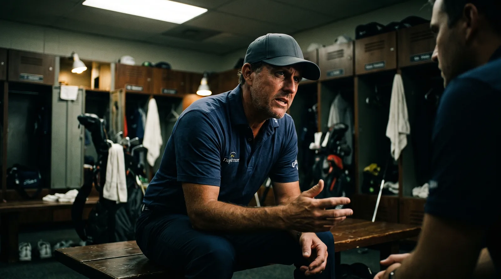

Quick Summary: Fresh off an opening 7-under 63 at the John Deere Classic, Lucas Glover delivered the most candid player assessment yet of the PGA Tour's impending 2028 overhaul. While acknowledging that the controversial new rule barring top-tier players from dropping down to lower-tier tournaments "stinks" for local fans and loyal past champions, the former critic turned policymaker explained why the business model makes commercial sense for $20 million sponsors.

The Iron Curtain of 2028: The Challenger Series Exclusion Rule
Fresh off a scorching opening-round 63 that placed him in a tie for the lead at the John Deere Classic, veteran Lucas Glover didn't hold back. In a sport increasingly dominated by corporate talking points, Glover offered a refreshingly honest player's perspective on the PGA Tour's 2028 overhaul. The focal point of his critique is a newly minted rule that establishes a strict one-way boundary between the Tour's split tiers. Once the PGA Tour splits into the Championship Series and the Challenger Series in 2028, players who qualify for the elite Championship Series will be prohibited from entering Challenger Series events. There are no exceptions—not for past champions of those events, nor for players wishing to compete in their hometown tournaments.
Glover admitted that the rule "stinks," expressing the exact sentiment shared by fans and tournament organizers. For a player like Glover, who won the John Deere Classic in 2021, the tournament represents a critical stepping stone in his career. The new restriction threatens to sever those exact ties of loyalty. If a tournament like the John Deere Classic falls into the lower-tier Challenger Series, a top-tier player would be barred from returning to support the event. Geography adds another layer of frustration. Glover, who resides in West Palm Beach, pointed out that if the local Cognizant Classic is classified as a Challenger Series stop, a tournament just twenty minutes from his house would become off-limits. With players heavily clustered in hub cities like West Palm Beach, Dallas, and Scottsdale, dozens of Tour pros face the reality of being banned from playing in front of their home crowds.
Protecting the Millions: Why the Exclusionary Rule Commercially Makes Sense
Despite his personal frustrations, Glover demonstrated a level of business maturity rarely seen in professional sports by acknowledging the corporate necessity behind the decision. The commercial logic is blunt: sponsors who are asked to fund the massive $20 million purses for Championship Series events require protection for their investment. If the Tour's star players were allowed to skip high-value, top-tier events in favor of playing cheaper tournaments down the road, they would actively devalue the premium product that those top-tier sponsors paid to support.
"Commercially, I see it. It makes sense," Glover admitted. His candor highlights the ongoing tension between player autonomy and the financial realities of modern professional golf. In an era where sponsors demand guaranteed star power in exchange for nine-figure investments, giving top-tier players the freedom to choose their schedule at the expense of primary events is a luxury the Tour's business model can no longer afford. While it represents a tough pill to swallow for individual players, protecting the commercial interests of the Tour's financial backers is essential for keeping the entire ecosystem afloat.
From Outside Critic to Policy Board Director: Glover's Unprecedented Path
Glover’s perspective on the 2028 changes carries unusual weight because of his dramatic transition from the Tour's loudest outside critic to a key decision-maker. For years, Glover used his SiriusXM radio show as a platform to challenge the Tour's executive direction. He frequently targeted field-size cuts, mocked pace-of-play arguments, and dismissed the Player Advisory Council (PAC) as ineffective. In fact, he was voted onto the council ten times by his peers and declined the seat every single time.
However, the landscape shifted dramatically this year. Glover accepted the eleventh invitation, ran against Adam Scott for the position of PAC chairman, and won. This critical role elevates him onto the PGA Tour Policy Board from 2027 through 2030, in addition to securing a seat on the board of PGA Tour Enterprises—the newly formed, for-profit commercial arm shaping the future of the league. Alongside figures like Tiger Woods and Patrick Cantlay, Glover now has a direct hand in governance. When he critiques the 2028 model, he is no longer speculating from the sidelines; he is recounting debates he participated in and structural decisions he will actively oversee.
The End of Top-Tier Handouts and a New Era of Collaboration
Surprisingly, Glover’s inside view has softened his stance on several other key elements of the 2028 restructuring plan. He has voiced strong support for the elimination of sponsor exemptions at the top level, viewing the change as a victory for competitive integrity. Under the new model, the Championship Series will operate as a pure meritocracy. Glover argues that sponsors will not miss the old exemption system because they will be guaranteed a field of the 120 best players in the world week in and week out, rather than relying on discretionary invites.
Additionally, Glover has praised the collaborative approach of PGA Tour executives—specifically CEO Brian Rolapp. The relationship represents a remarkable pivot, considering Glover once vowed never to speak to Rolapp again after Doral was added to the schedule. Now, Glover commends Rolapp for presenting the proposed changes to the players six to eight months in advance, allowing for genuine feedback and iterative adjustments. The fact that the locker room’s most vocal skeptic is endorsing the planning process as a collaborative success is a major victory for the Tour's leadership.
The Raw Read: The Grown-Up Realities of Modern Golf Governance
Lucas Glover's commentary represents exactly what a constructive player voice should sound like. He avoided blind cheerleading while refraining from outright condemnation. Instead, he identified a rule that stings, explained whom it affects, and then objectively conceded the business case that overrides his personal preference. Modern professional golf is defined by these exact compromises: banning elite players from legacy and hometown stops is disappointing for fans and communities, but the sponsors funding the sport's massive growth have a valid claim to exclusivity.
Ultimately, the most compelling story is Glover's personal evolution. Faced with a changing sport, he decided that complaining on the radio was no longer an effective strategy, choosing instead to take a seat at the board table. Whether he adapts to the establishment or successfully champions the perspective of the Tour's middle-class players remains to be seen. However, his honest comments at TPC Deere Run suggest he has no intention of silencing his signature candor. He is still willing to say the uncomfortable parts out loud—except now, he is doing it from inside the room where the rules are written.
Frequently Asked Questions
What PGA Tour rule did Lucas Glover criticize?
Glover criticized the 2028 rule that bans qualified Championship Series players from entering lower-tier Challenger Series events, even if they are past champions or live near the venue.
Why does this rule bother him personally?
As a past winner of the John Deere Classic (2021), Glover values loyalty to the tournaments that supported his early career. Additionally, he lives in West Palm Beach, meaning his local hometown event could become off-limits if classified in the Challenger Series.
Why does Glover admit the rule makes sense?
He acknowledges that sponsors funding the $20 million Championship Series events deserve commercial exclusivity. Allowing star players to drop down to cheaper events would dilute the value of the premium tournaments.
What is Lucas Glover's current role in PGA Tour leadership?
Glover is the Player Advisory Council (PAC) chairman. This role graduates him to the PGA Tour Policy Board from 2027 to 2030, along with a seat on the board of PGA Tour Enterprises.
Was Lucas Glover always supportive of Tour management?
No. Glover was previously one of the Tour's most outspoken critics on SiriusXM radio. However, since joining the leadership team, he has praised the collaborative approach of CEO Brian Rolapp and the move toward a pure meritocracy.